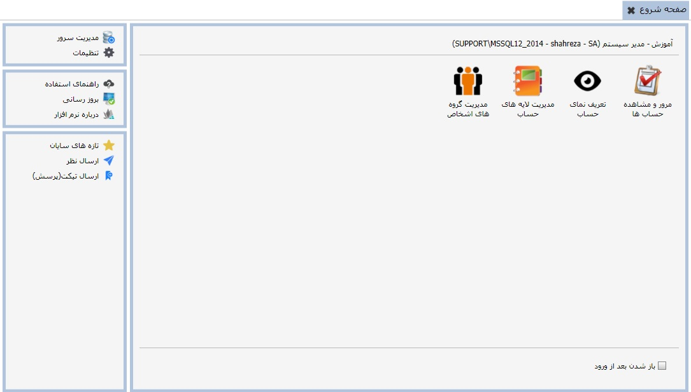
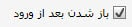
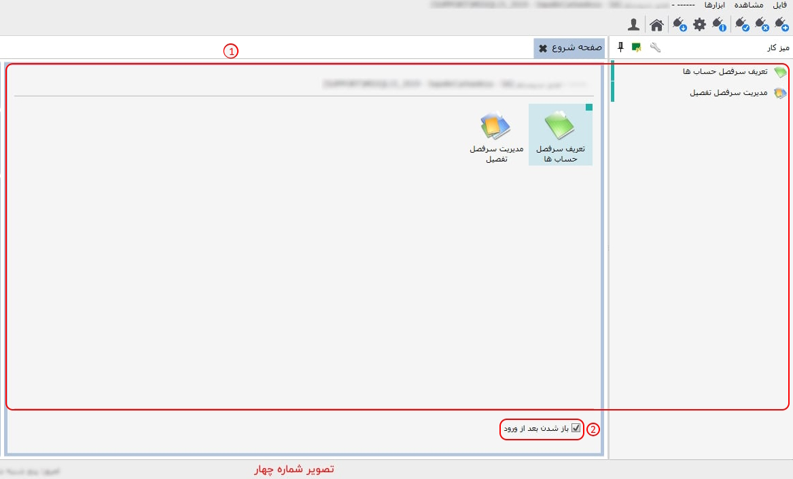
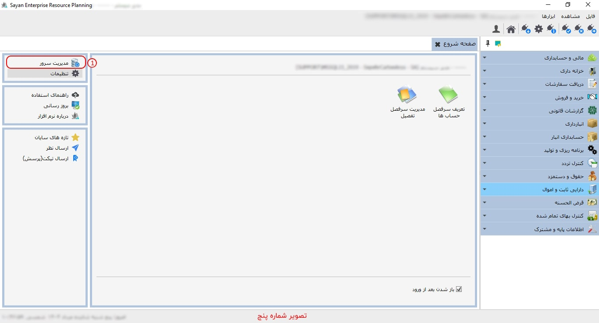
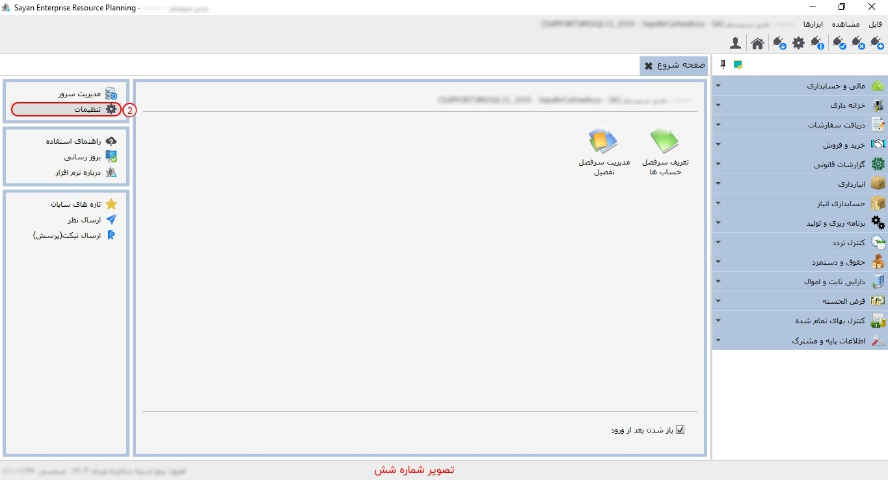
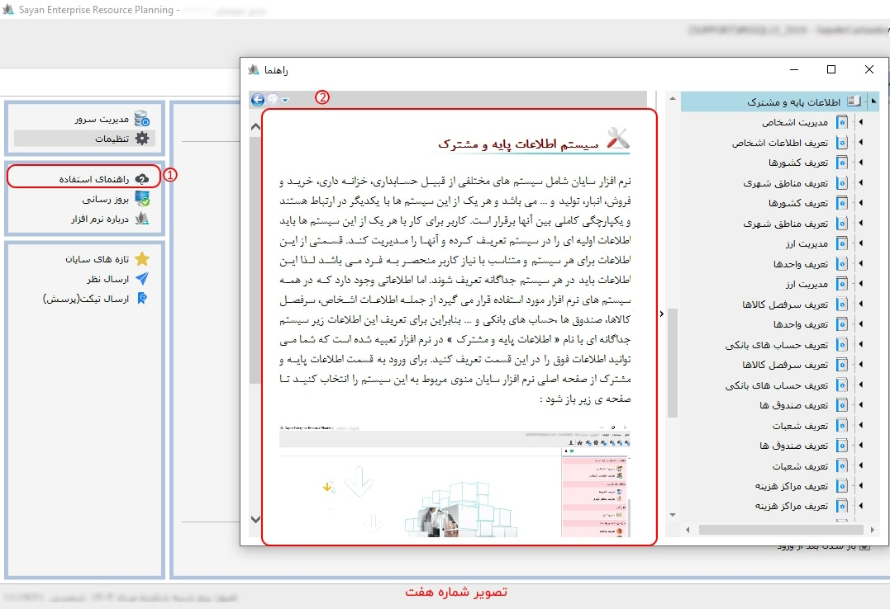

اگر روی هر یک از آیکن ها کلیک راست کنید تصویر بالا نمایش داده می شود. برای تغییر شکل آیکن ها، ویرایش نام آن ها روی میز کار و حذف آن ها از میز کار می توانید از این روش استفاده کنید.
با کلیک روی منوی فوق می توانید صفحه شروع نرم افزار را مشاهده نمایید.

تنظیمات پیش فرض
نرم افزار سایان به این شکل است که به
محض ایجاد ارتباط با یک دیتابیس، صفحه
شروع مربوط به آن به نمایش در می آید.
هر کاربر می تواند صفحه
شروع مربوط به کاربری خود را تنظیم کند،
در واقع آیتم های نمایش داده شده در صفحه
شروع برای هر کاربر مستقل است و ممکن است
با صفحه شروع سایر کاربران متفاوت باشد.
در بالای صفحه شروع، باز هم نام پایگاه داده، نام
کاربر و ... درج شده است. تعدادی آیکن روی
صفحه که در واقع میز کار شما می باشد مشاهده
می کنید، برای دسترسی بهتر و سریع تر به هر
یک از منوهای موجود در سیستم ها، می توانید
آیکن های آن ها را در میز کار خود قرار دهید.
همان طور که در شکل بالا مشاهده می نمایید، با انتخاب و درگ کردن هر یک از منوهای نرم افزار روی صفحه شروع، می توانید آیکن میانبر آن منو را در صفحه شروع داشته باشید.
اگر روی هر یک از آیکن ها کلیک
راست کنید تصویر بالا نمایش داده می شود.
برای تغییر شکل آیکن ها، ویرایش نام
آن ها روی میز کار و حذف آن ها از میز
کار می توانید از این روش استفاده کنید.
 اگر بخواهید هنگام ورود به پایگاه داده صفحه شروع برای شما نمایش داده شود، باید این گزینه را علامت دار کنید، در غیر این صورت می توانید تیک آن را بردارید.
 مدیریت سرور: با کلیک روی این گزینه پنجره
ارتباط با اس.کیو.ال و سپس پنجره
مدیریت سرور نمایش داده می شود.
همان طور که قبلا هم درباره مدیریت
سرور توضیحاتی ارائه دادیم، شما از
این طریق نیز به صفحه مدیریت سرور
دسترسی خواهید داشت و می توانید
تنظیمات و عملیات مورد نیاز را
برای دیتابیس روی سرور انجام دهید.
مدیریت سرور: با کلیک روی این گزینه پنجره
ارتباط با اس.کیو.ال و سپس پنجره
مدیریت سرور نمایش داده می شود.
همان طور که قبلا هم درباره مدیریت
سرور توضیحاتی ارائه دادیم، شما از
این طریق نیز به صفحه مدیریت سرور
دسترسی خواهید داشت و می توانید
تنظیمات و عملیات مورد نیاز را
برای دیتابیس روی سرور انجام دهید.
 تنظیمات: با کلیک
روی این گزینه صفحه تنظیمات نمایش داده
می شود که شامل چهار تب می باشد. داخل
هر یک از این تب ها توضیحات مربوط
به هر یک از تنظیمات وجود دارد که
میتوانید آنها را متناسب با نیاز
خود انجام دهید. تصاویر مربوط به
هر تب را در ادامه مشاهده می کنید:
تنظیمات: با کلیک
روی این گزینه صفحه تنظیمات نمایش داده
می شود که شامل چهار تب می باشد. داخل
هر یک از این تب ها توضیحات مربوط
به هر یک از تنظیمات وجود دارد که
میتوانید آنها را متناسب با نیاز
خود انجام دهید. تصاویر مربوط به
هر تب را در ادامه مشاهده می کنید:
در تب تنظیمات عمومی می توانید نوع تقویم و فونت نرم افزار را به دلخواه انتخاب کنید. همچنین شما می توانید تعیین کنید که در ابتدای نام اشخاص حقیقی کلمه آقا یا خانم قرار گیرد یا خیر.
در تب الگوهای جستجو می توانید برای کالاها و اشخاصی که در نرم افزار تعریف شده اند با استفاده از کلمات کلیدی که در این قسمت قرار داده شده است الگوی نمایش و جستجو تعیین نمایید.
در دو تب پشتیبان گیری و گزارش ساز نیز توضیحات لازم قرار داده شده است که می توانید بر اساس آن ها تنظیمات لازم را در این دو قسمت انجام دهید.
 راهنمای استفاده: در صفحه شروع منوی دسترسی به راهنمای نرم افزار قرار داده شده است که با کلیک روی آن می توانید راهنمای نرم افزار را مشاهده نمایید. البته با باز کردن پنجره هر یک از منو ها، با فشردن کلید (F1) می توانید به راهنمای همان قسمت و همچنین به کل راهنمای نرم افزار دسترسی پیدا کنید.
درباره ی نرم افزار: با انتخاب این گزینه پنجره زیر به نمایش در می آید که اطلاعات شرکت سایان جزئیات ورژن نرم افزار در آن نمایش داده می شود.
